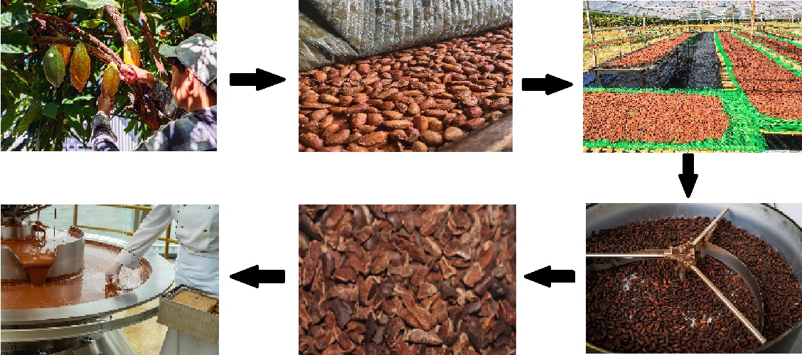

Production Process
-
Harvesting cocoa pods
Cocoa pods grow directly on the trunk and branches of the cacao tree. When ripe, they turn yellow, orange, or red and are carefully cut off by hand. Farmers split the pods to remove the pulp-covered cocoa beans. Harvesting is usually done twice a year.
-
Fermentation
Beans are placed in wooden boxes or covered with banana leaves for several days. Natural yeasts develop flavor and reduce bitterness. Proper fermentation is essential for chocolate’s taste.
-
Drying
Beans are spread under the sun for one to two weeks. Drying reduces moisture and prevents mold growth. Beans are regularly turned for even drying.
-
Roasting
Roasting enhances aroma and deepens flavor. It also kills bacteria and loosens the shell. Different roasting levels create different flavor profiles.
-
Grinding into cocoa mass
Roasted nibs are ground into cocoa mass (chocolate liquor). Grinding releases cocoa butter, forming a smooth paste.
-
Mixing and refining
Cocoa mass is mixed with sugar and refined to create smooth, balanced chocolate ready for molding.
|
 |